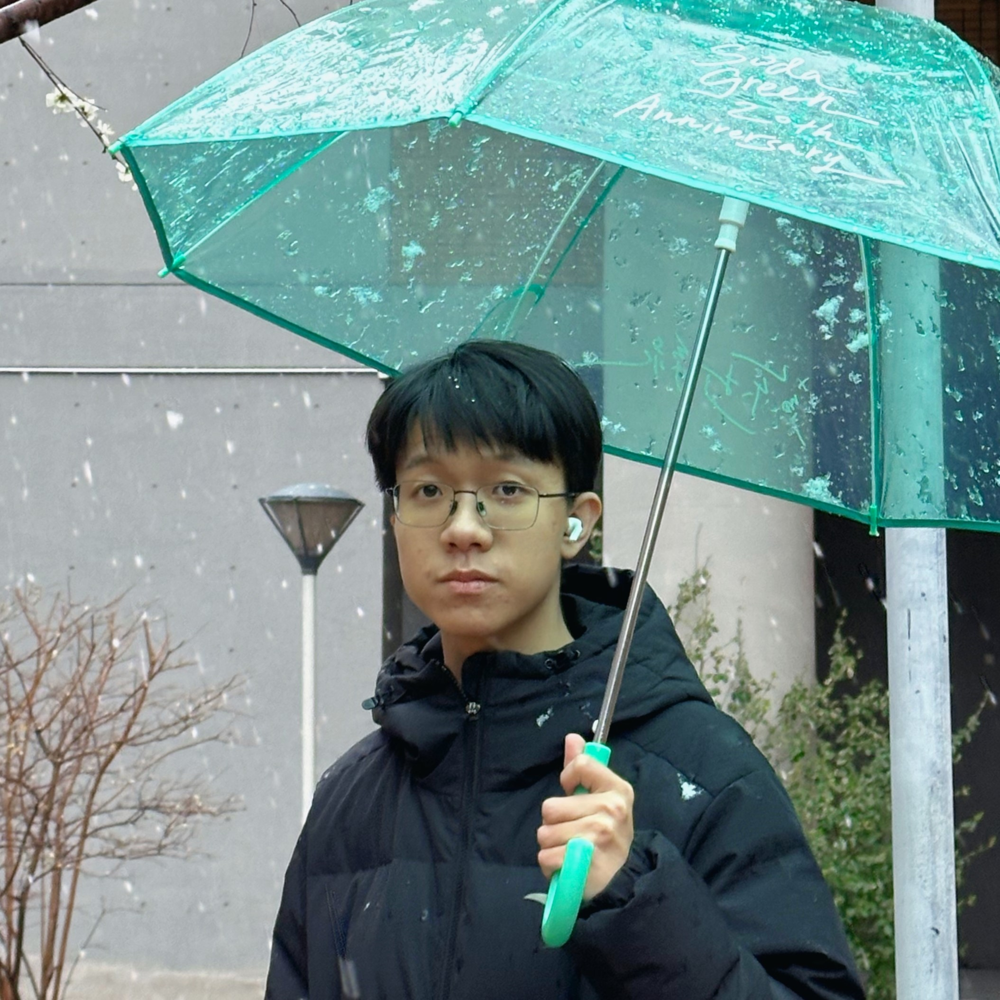

北京外国语大学（Beijing Foreign Studies University）
E-mail: linchen@bfsu.edu.cn
GitHub: lucas-c-lin
My name is Chen Lin, from Xiamen, Fujian. I graduated from Beijing Foreign Studies University with a major in English (Linguistics) and minors in Journalism and Communication Studies. During my undergraduate years, I ranked 2/172 (top 2%), and received honors including the National Scholarship and Outstanding Student Cadre awards.
My current academic interests focus on computational linguistics, especially around language processing, statistical modeling, and large language model applications. I have worked on projects such as instruction tuning and LoRA optimization for small LLMs, prompt strategy design in AI-assisted bilingual writing, and quantitative studies on stress-pattern acquisition by Chinese learners of English.
Technically, I mainly use Python and R, and I am experienced with data analysis workflows, Git/GitHub collaboration, and academic writing systems such as Docs-as-Code and Quarto. I also have hands-on media practice in new media operations, graphic design, and audio-video production. If you are interested in Southern Min (Hokkien) language and cultural preservation, I would be very happy to connect and collaborate.
我叫林晨，来自福建厦门，毕业于北京外国语大学英语学院，主修英语（语言学），辅修传播学。本科期间专业排名 2/172（前 2%），获国家奖学金、三好学生、优秀学生干部等荣誉。
我的研究兴趣主要集中在计算语言学方向，重点关注自然语言处理、统计建模与大模型应用。我参与过小参数语言模型 SFT 指令微调与 LoRA 优化、AI 辅助双语写作提示词策略、以及中国英语学习者英语词汇重音习得等研究项目。
在技术上，我主要使用 Python 和 R，熟悉数据分析流程、Git/GitHub 协作，以及 Docs-as-Code、Quarto 等学术写作与发布工具。同时我也有较丰富的传媒实践经验，包括新媒体运营、平面设计与音视频制作。如果你也关注闽南文化与闽南语保护，欢迎联系交流，一起推进相关工作。